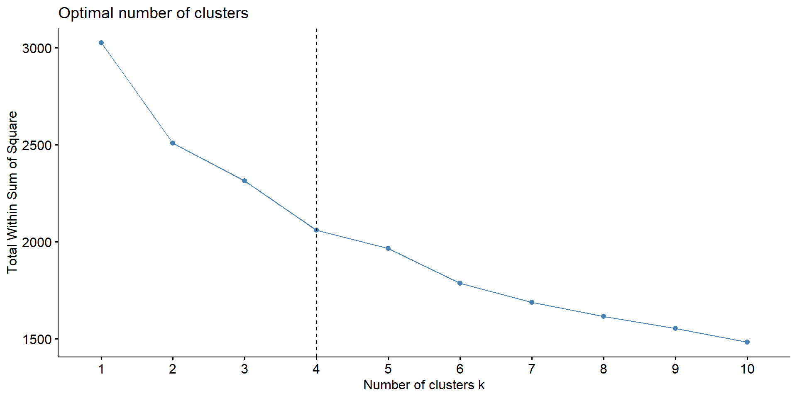
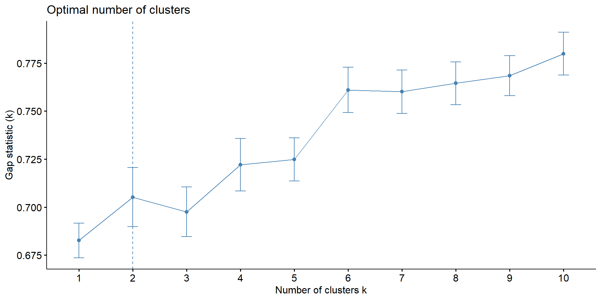
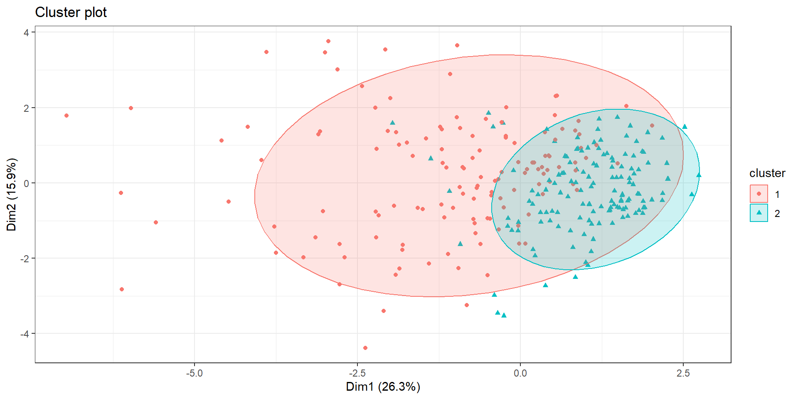
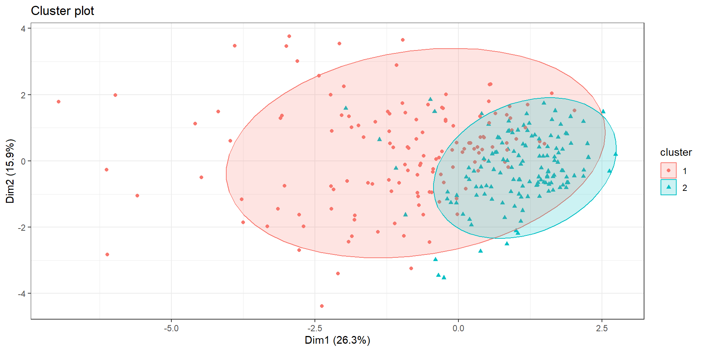
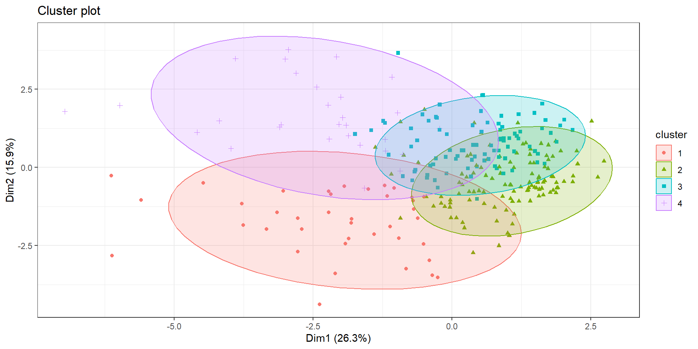
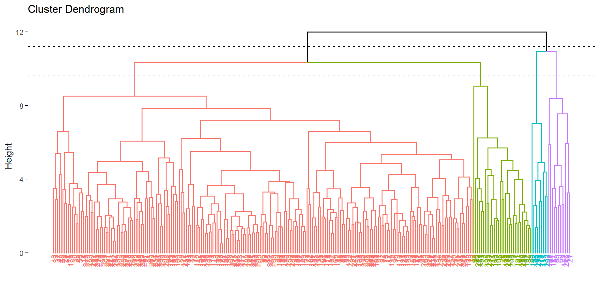
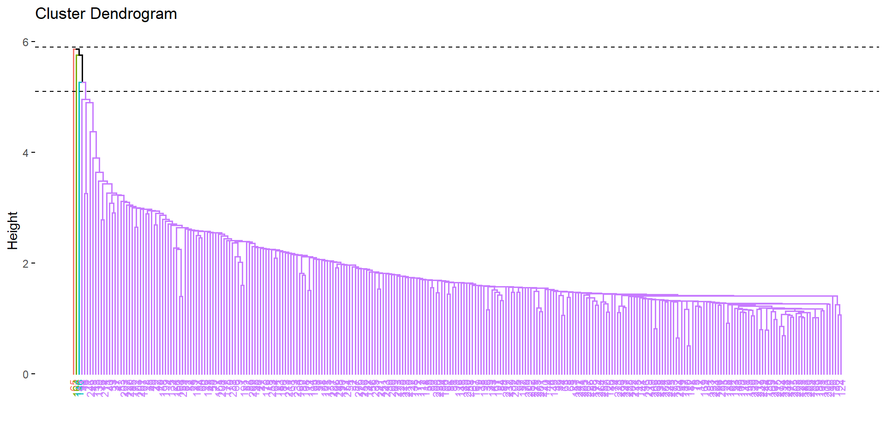
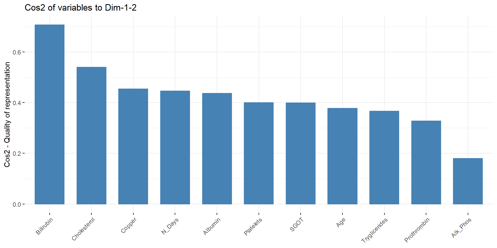

datos <- read.table("cirrosis_tidy.csv", header = TRUE )
datos = datos %>% mutate(Ascites = Ascites %>% as.factor,
Hepatomegaly = Hepatomegaly %>% as.factor,
Spiders = Spiders %>% as.factor,
Edema = Edema %>% as.factor,
Stage = Stage %>% as.factor,
Drug = Drug %>% as.factor,
Sex = Sex %>% as.factor,
Status = Status %>% as.factor)Cirrosis
Irene LiFeng Julià Pérez & Xisco Ribera Ramis
Presentación del problema
Base de datos relacionados con la cirrosis.
Fuente: Kaggle - Cirrhosis
Repositorio: enlace
Objetivo del estudio
Establecer un perfil de paciente para cada fase de la cirrosis utilizando clustering.

Cargamos los datos y arreglamos las variables:
Rows: 276
Columns: 20
$ ID <int> 1, 2, 3, 4, 5, 7, 8, 9, 10, 11, 12, 13, 15, 16, 17, 18, …
$ N_Days <int> 400, 4500, 1012, 1925, 1504, 1832, 2466, 2400, 51, 3762,…
$ Status <fct> Muerto, Cens, Muerto, Muerto, Cens_Trat, Cens, Muerto, M…
$ Drug <fct> D-penicillamine, D-penicillamine, D-penicillamine, D-pen…
$ Age <int> 21464, 20617, 25594, 19994, 13918, 20284, 19379, 15526, …
$ Sex <fct> Female, Female, Male, Female, Female, Female, Female, Fe…
$ Ascites <fct> Si, No, No, No, No, No, No, No, Si, No, No, No, No, No, …
$ Hepatomegaly <fct> Si, Si, No, Si, Si, Si, No, No, No, Si, No, No, No, No, …
$ Spiders <fct> Si, Si, No, Si, Si, No, No, Si, Si, Si, Si, No, No, No, …
$ Edema <fct> Si, No, Sin, Sin, No, No, No, No, Si, No, No, No, No, No…
$ Bilirubin <dbl> 14.5, 1.1, 1.4, 1.8, 3.4, 1.0, 0.3, 3.2, 12.6, 1.4, 3.6,…
$ Cholesterol <int> 261, 302, 176, 244, 279, 322, 280, 562, 200, 259, 236, 2…
$ Albumin <dbl> 2.60, 4.14, 3.48, 2.54, 3.53, 4.09, 4.00, 3.08, 2.74, 4.…
$ Copper <int> 156, 54, 210, 64, 143, 52, 52, 79, 140, 46, 94, 40, 173,…
$ Alk_Phos <dbl> 1718.0, 7394.8, 516.0, 6121.8, 671.0, 824.0, 4651.2, 227…
$ SGOT <dbl> 137.95, 113.52, 96.10, 60.63, 113.15, 60.45, 28.38, 144.…
$ Tryglicerides <int> 172, 88, 55, 92, 72, 213, 189, 88, 143, 79, 95, 130, 96,…
$ Platelets <int> 190, 221, 151, 183, 136, 204, 373, 251, 302, 258, 71, 24…
$ Prothrombin <dbl> 12.2, 10.6, 12.0, 10.3, 10.9, 9.7, 11.0, 11.0, 11.5, 12.…
$ Stage <fct> 4, 3, 4, 4, 3, 3, 3, 2, 4, 4, 4, 3, 3, 3, 4, 4, 3, 4, 4,…Variables
| Unidad | Media | Desv | Minimo | Maximo | Rango | |
|---|---|---|---|---|---|---|
| N_Days | Días | 1979.167 | 1112.380 | 41.00 | 4556.00 | 4515.00 |
| Age | Días | 18189.326 | 3843.556 | 9598.00 | 28650.00 | 19052.00 |
| Bilirubin | mg/dl | 3.334 | 4.601 | 0.30 | 28.00 | 27.70 |
| Cholesterol | mg/dl | 371.261 | 234.788 | 120.00 | 1775.00 | 1655.00 |
| Albumin | g/dl | 3.517 | 0.405 | 1.96 | 4.40 | 2.44 |
| Copper | ug/día | 100.768 | 88.269 | 4.00 | 588.00 | 584.00 |
| Alk_Phos | U/l | 1996.612 | 2115.478 | 289.00 | 13862.40 | 13573.40 |
| SGOT | U/ml | 124.119 | 56.720 | 28.38 | 457.25 | 428.87 |
| Tryglicerides | mg/dl | 124.978 | 65.281 | 33.00 | 598.00 | 565.00 |
| Platelets | ml/1000 | 261.772 | 93.129 | 62.00 | 563.00 | 501.00 |
| Prothrombin | s | 10.736 | 1.008 | 9.00 | 17.10 | 8.10 |
Clustering
Escalar y centrar
Matriz de distancias
K-means

Sería interesante ver si estos clusters corresponden a las fases de cirrosis segun la variable stage. Veamos la tabla de frecuencias:
Un kmeans con \(k=4\) no clusteriza en función del estado de cirrosis en que se encuentra el paciente.
K-medoids (PAM)
- Estimación del \(k\) óptimo
- Método
silhouette - Método
gap_stat - k-medoids
Sex,DrugyHepatomegaly- k-medoids con \(k=4\)
stage


Sex
Cluster_medoid_2
Sex 1 2
Female 110 132
Male 24 10Drug
Cluster_medoid_2
Drug 1 2
D-penicillamine 68 68
Placebo 66 74Hepatomegaly
Cluster_medoid_2
Hepatomegaly 1 2
No 50 84
Si 84 58Observamos que los clusters con k-medoids con \(k=2\) no se asemejan a la partición de ninguna de estas tres variables.
Un k-medoids con \(k=4\) no clusteriza en función del estado de cirrosis en que se encuentra el paciente.
CLARA

Sex
Cluster_clara_2
Sex 1 2
Female 113 129
Male 24 10Drug
Cluster_clara_2
Drug 1 2
D-penicillamine 68 68
Placebo 69 71Hepatomegaly
Cluster_clara_2
Hepatomegaly 1 2
No 51 83
Si 86 56Observamos que Clara tampoco clusteriza en función de Sex, Drug ni Hepatomegaly.

El método Clara con \(k=4\) tampoco clusteriza en función de la fase de cirrosis en que se encuentra el paciente.
Dendogramas


Hay que comprobar que la estructura preserva bien las distancias originales entre las observaciones.
Usamos el coeficiente de correlación entre las distancias cophenetic del dendrograma y la matriz de distancias original.
Cuanto más cercano a 1 sea el valor, mejor refleja el dendograma las distancias originales.
Análisis de Componentes Principales
ACP

Empezamos por las contribuciones de las variables a las primeras dos componentes principales.
Dim.1 Dim.2
N_Days 12.8548 4.2688
Age 1.0475 19.9320
Bilirubin 24.1993 0.4249
Cholesterol 6.9682 19.3881
Albumin 10.6081 7.4756
Copper 15.6967 0.0509
Alk_Phos 2.3828 6.3843
SGOT 11.0622 4.5399
Tryglicerides 9.0575 5.9798
Platelets 0.7828 21.6108
Prothrombin 5.3400 9.9449Tambien apreciamos la calidad de representación de las variables a las componentes principales.
Dim.1 Dim.2
N_Days 0.37126 0.07446
Age 0.03025 0.34769
Bilirubin 0.69891 0.00741
Cholesterol 0.20125 0.33820
Albumin 0.30638 0.13040
Copper 0.45334 0.00089
Alk_Phos 0.06882 0.11137
SGOT 0.31949 0.07919
Tryglicerides 0.26159 0.10431
Platelets 0.02261 0.37698
Prothrombin 0.15423 0.17348Hemos podido comprobar lo expuesto anteriormente:
Se aprecia una importante contribución de la variable
Bilirubina la primera componente principal, además de una muy buena representación (un valor de cos2 muy elevado).Seguidamente, la variable
Platelets,AgeyCholesteroltiene gran contribución a la segunda componente principal.Observemos que la variable
Cholesterol, a pesar de ser la tercera variable mejor representada por la segunda componente principal, es la que mejor (de entre estas tres) está representa en conjunto con la CP1 y la CP2.
ACP + Clustering
Pintemos ahora el mismo gráfico biplot, pero coloreadolo en función de los clusters que se nos habían generado en k-means:
Viendo este gráfico parece que clusteriza en función de la contribución de cada muestra a las componentes principales. Como la variable
Bilirubinestá bien representada por la primera componente principal, es normal que un cluster (círculos rojos) sean las muestras que más aportan a ésta.Luego están las muestras azules que corresponden a aquellas que parece que estan representadas por
CholesterolyPlatelets.A continuación, encontramos las verdes que son las que estan más representadas por
Age, que era una de las variables que mejor se representaba por la segunda componente principal.Y finalmente, encontramos el grupo lila que son las que estan más representadas por
Albuminque notemos que también contribuye bastante en la primera componente principal
Conclusiones
Tanto k-means como k-medoids como Clara, con \(4\) clusters no agrupa en función de la variable
stage.Utilizando clasificación jerárquica, observamos que las distancias Single or Minimum y Average preservan mejor las distancias entre observaciones, en cambio Ward’s minimum variance en nustro caso no es recomendable usarla.
En cuanto a ACP, observamos que la variable
Bilirubinestá bien representada por la primera componente principal. Seguidamente, la variablePlatelets,AgeyCholesteroltiene gran contribución a la segunda componente principal.Los clusters que se han realizado con \(k=4\) parecen estar hechos en función de la calidad de representación de las variables que más bien estan representadas por las dos primeras componentes principales.
Muchas gracias :))
Irene Julià, Xisco Ribera